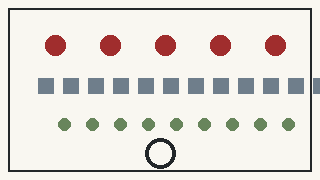

京张人民智城
AI向前，人民在先。 人民是城市的主人，AI是人民使用并能够控制的工具。
一条百年线，三次人民创造
百年京张——人民创造历史；中关村——人民创造科技；AI时代——科技重新回到人民之中。京张铁路遗址公园首先是一条人民公共脊梁，其次才是AI展示与测试空间。

总览：provisional 总体范围、三处重点区与人民公共脊梁。
人民AI宪章
五权：知情、选择、拒绝、人工复核、申诉纠错。
一责：公共部门、运营者和技术提供方共同承担解释、维护、纠错、停机与退出责任。
一底线：AI必须保留真实、可操作的人类控制。
全域用地责任结构
总体范围按南/中/北三个城市带与人民服务、开放创新、受控转化、公共空间四类责任界面形成12个全域概念单元；三处重点区叠加详细设计。

用地结构：12个概念责任单元覆盖整个 provisional site。
三处重点区域
众智园强调可验证创新，AI原点强调可生活的AI，大钟寺强调产业收益进入公共生活。

重点区：众智园、AI原点社区、大钟寺。
交通慢行与蓝绿公共空间
以京张人民公共脊梁为南北主线，重点区设置东西服务缝合线；普通步行、骑行、无障碍、绿荫、休息和人工帮助先于智能设施。

交通与公共空间：AI设施轻附着、可撤回，基本通行和环境品质不依赖模型。
两红锚、三地标
人民工程馆与人民AI服务站构成两类红色公共锚点；人民工程馆、开源原点广场、公共智能廊构成三处AI朝圣地标。红色来自铁路工业、公共建筑和场地已有红色/工业/社区文化，不以红色灯光和巨型标语代替公共功能。
结构化承诺
BASELINE → AI PILOT → HUMAN REVIEW → PUBLIC RECEIPT → SCALE / REVISE / STOP

指标与治理证据：所有数值明确区分 provisional 计算值与待验证实绩。
证据与边界
完整机器可读证据见 proposal、metrics、sources、assumptions、risk、compliance、standard、design-depth 与 geometry 文件。当前空间边界仍为 provisional，新增几何为概念设计；最终 PR 前必须同步最新上游并在 exact post-sync head 重跑全部 formal gate。